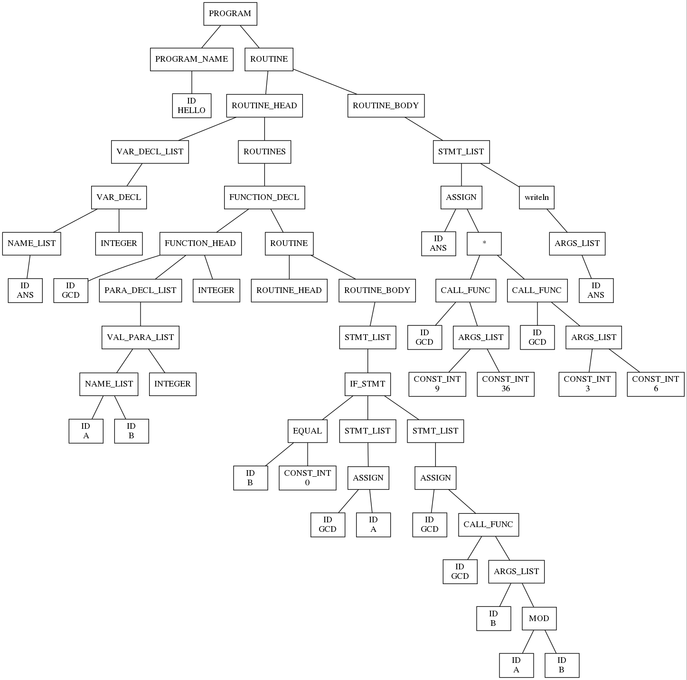

1 抽象语法
1 Abstract Syntax | 抽象语法¶
语法 (syntax) 规定了如何将各种 phrases(expr, commands / statements, decl, etc.) 组合成程序。
- 表层语法树 / 具体语法树 (surface syntax tree / concrete syntax tree): 表示 parse 出的结果，和语法规则对应；
- 抽象语法树 / 结构语法树 (abstract syntax tree / structural syntax tree): 排除了一些无用的组分，例如 factor, term 之类的内容；这些内容只为了 parse 的正常执行，但是对 semantic 帮助不大。
1.1 Abstract Syntax Tree, AST | 抽象语法树¶
抽象语法树是一棵有序树，其叶子结点为 变量 (variable) 或者没有 参数 (argument) 的 运算符(operator)，其内部节点是 operators。
Note
需要注意的是，这里的 variable 和 operator 不能简单地理解为编程语言中的相关概念。例如，下面这棵语法树里，诸如「函数定义」(FUNCTION_DECL) 之类的中间节点也是 operator；而「整型」(INTEGER) 之类的叶子结点也是 variable。

另外，严格地说，上面这张图并不是一棵 AST (这张图来自我编译原理大作业对一个例程生成的语法树)。首先，图中仍然保留了一些形如 STMT_LIST 的节点，这些节点仍属于 concrete syntax 的范畴；另外，图中的 ID 之类的 variable 注明了其名字，例如 ANS, GCD 等，所以它有我们在 1.2 会讲到的 ABT 的性质。
AST 按语法的不同形式分为不同的 类别 (sort)，记作 \(s\)。类别的集合记作 \(S\)。
Example
例如，常见的编程语言区分 expression 和 statement，这就是两个不同的 sort，分别记为 \(s_1\) 和 \(s_2\)。
多个 AST 通过 operator 进行组合。我们通过运算符的 元数 (arity) 规定运算符的 sort \(s\) 及其参数的数目 \(n\) 和 sort \(s_i\)，记作 \((s_1, \dots, s_n)s\)。
用 \(o\) 表示运算符，具有 arity \(\alpha\) 的运算符的集合记作 \(O_\alpha\)；记 \(O = \{O\alpha\}\) 为一个按 arity 索引的、由互不相交的 \(O_\alpha\) 构成的集族。
Example
承上例，假设 \(s_1\) 中存在运算符 plus, times 和 num，它们的结构分别类似于 plus(expr1; expr2), times(expr1; expr2) 和 num[n] ( 其中 \(n\in \mathbb{N}\) )；\(s_2\) 中存在运算符 if ，它的结构类似于 if (expr) then stmt1 else stmt2。那么 plus 和 times 的 arity 均记作 \((s_1, s_1)s_1\)，而 num 的 arity 记作 \((\mathbb{N})s_1\)， if 的 arity 记作 \((s_1, s_2, s_2)s_2\)。
Variables 用 \(x\) 来表示；sort \(s\) 上的变量集合记为 \(X_s\)；sort 集合 \(S\) 上的 变量族 定义为 \(X = \{X_s\}_{s \in S}\)。
变量是某个领域内的未知的对象，用特定对象 代换 (substitution) 某个表达中的全部同个变量，则变量成为已知。
变量是一个未知的对象或者占位符，其含义由代换赋予。
Example
承上例，\(2 + (3 \times x)\) 可以表达为 plus(num[2]; times(num[3]; x))。这里 \(x\) 是一个变量。
由于 num[4] 也是 \(s_1\) 类型的 AST，因此可以用它 代换 上面 AST 中的 \(x\)，得到 plus(num[2]; times(num[3]; num[4]))。
同时，由于 plus(num[1]; num[2]) 也是 \(s_1\) 类型的 AST，因此也可以用它代换上面 AST 中的 \(x\)，得到 plus(num[2]; times(num[3]; plus(num[1]; num[2])))。
给定一个 sort 集合 \(S\) 和一个 operator 集族 \(O\)，variable 集族 \(X = \{X_s\}_{s \in S}\) 定义同前。那么：
- 当 \(X\) 上下文无关 (context-free) 时，如果 \(x \in X_s\)，那么称 \(x\) 的类别为 \(s\)；
- 如果对于任意 \(s\in S\) 都有 \(x \not \in X_s\)，那么称 \(x\) 对 \(X\) 是 新 的 ( \(x\) is fresh to \(X\) )；
- 如果 \(x\) is fresh to \(X\)，且 \(s\) 是一个 sort，那么称 \(X, x\) 是通过增加 \(x\) 到 \(X_s\) 所得的变量集族；
- 如果 \(s\) 由上下文决定而不是显式声明时，这个记法是有歧义 (ambiguous) 的。
Error
上面这段还没看懂，之后回来补
我们形式化地给出 AST 的定义。AST 的族 \(A[X] = \{A[X]_s\}_{s\in S}\) 是满足以下条件的最小族：
- 如果 \(x \in X_s\)，那么 \(x\in A[X]_s\)。即，一个类别是 \(s\) 的变量是一棵类别为 \(s\) 的 AST；
- 如果 \(o\) 的元数为 \((s_1, \dots, s_n)s\)，且 \(a_1 \in A[X]_{s_1}, \dots, a_n \in A[X]_{s_n}\)，那么 \(o(a_1;\dots ;a_n) \in A[X]_s\)。即，用运算符可以组合 AST。
Structural Induction | 结构归纳法
根据上面的定义，由于 AST 的树形结构，如果我们希望证明所有 AST \(a\) 都具有性质 \(P(a)\)，那么我们只需要对于所有生成 \(a\) 的方式，都证明：「如果其子 AST 都具有该性质，那么生成的 \(a\) 也具有该性质」即可。即证明：
- 如果 \(x\in X_s\)，则 \(P_s(x)\)；
- 如果 \((s_1, \dots, s_n)s\)，且 \(P_{s_1}(a_1), \dots, P_{s_n}(a_n)\) 都成立，那么 \(P_s(o(a_1;\dots ;a_n))\) 也成立
即可。
我们进一步形式化地给出变量代换的定义。如果 \(a\in A[X, x]_s, b\in A[X]_s\)，则用 \(b\) 代换 \(a\) 中所有 \(x\) 得到的结果是 \([b / x]a\in A[X]_s\)，定义为：
- \([b / x]x = b\)
- \([b / x]y = y\)
- \([b / x]o(a_1; \dots; a_n) = o([b / x]a_1; \dots; [b / x]a_n)\)
可以证明，如果 \(a\in A[X, x]_s\)，那么对于任意 \(b\in A[X]\) 都存在唯一的 \(c\in A[X]\) 满足 \([b / x]a = c\)。
证明 (课堂上「让大家回去思考」)
对 \(a\) 使用结构归纳法：
- 如果 \(a = x\)，那么根据定义有 \(c = b\)；
- 如果 \(a = y \neq x\)，那么根据定义有 \(c = y\)；
- 如果 \(a = o(a_1; \dots; a_n)\)，根据归纳假设，有唯一的 \(c_1, \dots, c_n\) 满足 \(c_1 = [b / x]a_1, \dots, c_n = [b / x]a_n\)，因此 \(c = o(c_1; \dots; c_n)\)。
1.2 Abstract Binding Tree, ABT | 抽象绑定树¶
『如果你去网上搜，你可以发现除了这本书以外没有人说 ABT 这个概念。』
给定一个表达式 let x be expr1 in expr2，表示引入一个变量 x，用于在表达式 expr2 中表示 expr1。
变量 x 受 let 表达式的约束，只用在 expr2 中。在 expr1 中如果有任何 x 都只是碰巧名字相同的不同变量；这有些类似于 \((\lambda\ expr1. expr2)\ x\)。与 \(\lambda\) 演算一样，约束变量可以换名。
Example
例如 let x be num[7] in plus(x; x) 就可以得到 plus(num[7]; num[7])。类似于 \((\lambda\ x.x + x)\ 7 = 7 + 7\)。
而对于 let x be times(x; x) in plus(x; x)，就类似于 \((\lambda\ x.x + x)\ (x * x) = x * x + x * x\)。根据 \(\lambda\) 演算的相关知识容易理解，这里 times 中的 x 和 plus 中的 x 并不是同一个变量。
容易理解，let y be times(x; x) in plus(y; y) 与上式表达的含义一致；即约束变量可以换名。
我们用 \(x_1, \dots, x_k.a\) 的形式表示将变量序列 \(x_1, \dots, x_k\) 绑定 (bind) 到运算符 \(a\) 的参数上，从而将以 \(a\) 为根的 AST 泛化为一棵 抽象绑定树 (Abstract Binding Tree, ABT)。\(x_1, \dots, x_k.a\) 称为 抽象子 (abstractor)；这表示变量序列 \(x_1, \dots, x_k\) 在 ABT \(a\) 中是约束的 (bound)。在 \(k = 0\) 时，\(.a\) 可以简写为 \(a\)。通常我们将 \(x_1, \dots, x_k\) 记为 \(\vec{x}\)，从而用 \(\vec{x}.a\) 表示 \(x_1, \dots, x_k.a\)。
这种绑定决定了 \(\vec{x}\) 的 作用域 (scope) 是 ABT \(a\)。
前面的 let x be expr1 in expr2 就是 let(expr1; x.expr2)。这个形式表示 x 在 expr2 中是约束的，或者说 x 的作用域是 expr2。
Example
前例中 let x be num[7] in plus(x; x) 表示为 let(num[7]; x.plus(x; x))；let x be times(x; x) in plus(x; x) 可以表示为 let(times(x; x); x.plus(x; x))。后者表示的 ABT 形如：

绑定使得 operator 的 arity 得到了泛化。元数形如 \((s_1, \dots, s_n)s\)，而 泛化元数 (generalized arity) 形如 \((v_1, \dots, v_n)s\)；其中每一个 \(v\) 称为一个 价 (valence)，具有 \(s_1, \dots, s_k.s\) 即 \(\vec{s}.s\) 的形式，指定了参数的类别以及所绑定的变量的数量和类别。
我们称变量序列 \(\vec{x}\) 属于 \(\vec{s}\)，如果它们有相同的长度 \(k\)，且对每一个 \(1 \le i \le k\) 都有 \(x_i\) 的类别是 \(s_i\)。
Example
前例中 let 运算符的元数（泛化元数，但「泛化」根据上下文可以推断，因此可以简称为元数，后同）为 \((s_1, s_1.s_1)s_1\)。这表示 let 运算符的类别是 \(s_1\)（即表达式，参见 1.1 例子中的定义），第一个参数为不绑定任何变量的表达式；第二个参数为含有一个约束变量的表达式，约束变量是一个表达式。
我们形式化地给出 ABT 的定义。ABT 的族 \(B[X]\) 的定义与 AST 的族 \(A[X]\) 的定义类似，但是 \(X\) 在进入抽象子的作用域时会发生变化。
我们尝试这样定义 ABT：ABT 的族 \(B[X] = \{B[X]_s\}_{s\in S}\) 是满足以下条件的最小族：
- 如果 \(x \in X_s\)，那么 \(x\in B[X]_s\)。即，一个类别是 \(s\) 的变量是一棵类别为 \(s\) 的 ABT；
- 如果 \(o\) 的元数为 \((\vec{s_1}.s_1, \dots, \vec{s_n}.s_n)s\)，且 \(a_1 \in B[X, \vec{x_1}]_{s_1}, \dots, a_n \in B[X, \vec{x_n}]_{s_n}\)，那么 \(o(\vec{x_1}.a_1;\dots ;\vec{x_n}.a_n) \in B[X]_s\)。即，用运算符可以组合 ABT。
这种定义的问题是，形如 let(expr1; x.let(expr2; x.expr3)) 的 ABT 是 ill-formed 的，因为第一个绑定将 \(x\) 添加到 \(X\) 得到 \(x.X\)，这使得第二个绑定不能再将 \(x\) 添加到 \(X.x\) 中，因为 \(x\) 对于 \(X.x\) 来说不是新的。也就是说，这种定义没有正确解释约束变量的换名。
我们可以通过 fresh renaming 解决上述问题。具体而言，给定变量族 \(X\)，\(\vec{x}\) 的 fresh renaming 定义为一个 \(\vec{x}\) 到 \(\vec{x}'\) 的一个双射 \(\rho : \vec{x} \leftrightarrow \vec{x}'\)，其中 \(\vec{x}'\) 对于 \(X\) 而言是新的。我们用 \(\hat\rho (a)\) 表示将 \(a\) 中的每个 \(x_i\) 的出现替换为 \(\rho(x_i)\) 后的结果。
因此，我们给出 ABT 的族 \(B[X] = \{B[X]_s\}_{s\in S}\) 的正确定义：
- 如果 \(x \in X_s\)，那么 \(x\in B[X]_s\)。
- 如果 \(o\) 的元数为 \((\vec{s_1}.s_1, \dots, \vec{s_n}.s_n)s\)，且对于每个 \(1 \le i \le n\) 和对应的 fresh renaming \(\rho_i : \vec{x}_i \leftrightarrow \vec{x}_i'\) ，都有 \(\hat\rho_i(a_i) \in B[X, \vec{x_i}']\)，那么 \(o(\vec{x_1}.a_1;\dots ;\vec{x_n}.a_n) \in B[X]_s\)。
定义这种意义下的结构归纳法：structural induction modulo fresh renaming。（没讲，且懒得看）
定义 \(\alpha\)-等价 (\(\alpha\)-equivalence)。（讲了，但懒得看）
ABT 根据是否 \(\alpha\)-等价判定是否相同。
定义 ABT 上的代换。（也讲了，也懒得看）
创建日期: 2022-11-17